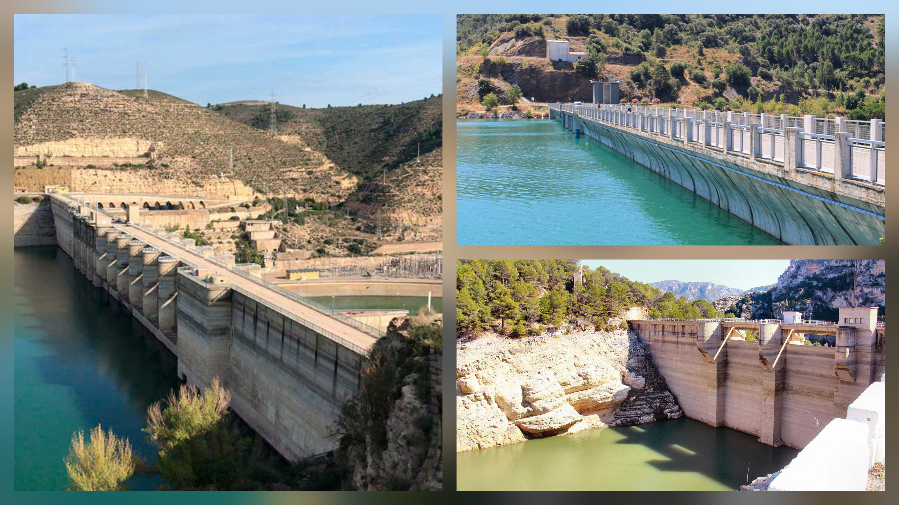
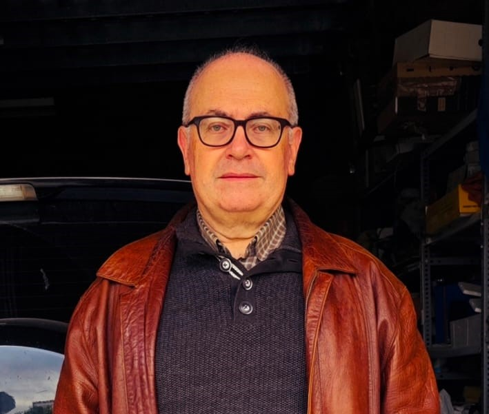
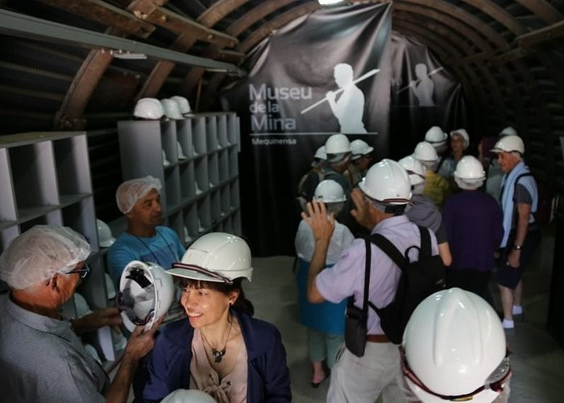

José Antonio Llopart va ser enginyer de camins, canals i ports, i té una àmplia experiència professional en el disseny i la construcció de grans infraestructures, especialment ponts. Al llarg de la seva trajectòria ha participat en projectes importants arreu d’Espanya i ha treballat tant en empreses constructores com en estudis d’enginyeria.
La seva entrevista és rellevant per al Treball de Recerca perquè aporta una visió tècnica i professional sobre el funcionament, la planificació i el manteniment dels pantans. Les seves explicacions permeten entendre millor aspectes clau del TDR, com els tipus de preses, el procés de construcció, la seguretat, i la funció del pantà d’Ulldecona dins del regadiu i la regulació de l’aigua. Aquesta informació serveix com a base experta per a la comparació entre els pantans d’Ulldecona, Mequinensa i Siurana.
Descarrega l'entrevista aquí
Per entendre millor la gestió de l’aigua al pantà de Siurana, es va entrevistar en Santi Borràs, propietari de l'empresa Canoa Kayak Siurana S.L. de l'embassament. Durant l’entrevista, en Santi va explicar com la sequera recurrent condiciona els usos agrícoles i el subministrament local, i també va destacar la problemàtica que genera el pantà amb la ciutat de Reus, que depèn parcialment d’aquest embassament. Segons ell, aquesta situació obliga a una planificació molt acurada de l’aigua i recorda la importància de mantenir les infraestructures per assegurar un ús sostenible i equilibrat entre les necessitats urbanes i rurals. La seva visió aporta una comprensió directa dels reptes reals que afronta la gestió del pantà i del seu impacte sobre la població i el medi ambient.
Descarrega l'entrevista aquí

Per conèixer el funcionament i la importància local del pantà d’Ulldecona, es va entrevistar en Bertomeu Carbó, encarregat de l'empresa Tragsatec del manteniment de l'embassament. Durant l’entrevista, en Bertomeu va explicar com l’embassament és essencial per al reg dels camps i per al subministrament d’aigua a la zona. També va destacar que existeix certa tensió en el sentiment de pertinença entre els municipis de La Sénia, Ulldecona i La Pobla de Benifassà, ja que cadascun percep el pantà com a propi i això afecta la gestió compartida de l’aigua. Les seves explicacions aporten una visió directa de com l’embassament influeix en la vida quotidiana dels habitants i en la preservació del seu entorn natural.
Descarrega l'entrevista aquí

Per conèixer la història i l’impacte del pantà de Mequinensa, es va entrevistar a Rosa, guia de l’oficina de turisme i antiga ciutadana de l’antic poble de Mequinensa, que va ser submergit amb la construcció de l’embassament. Durant l’entrevista, Rosa va explicar com el pantà ha transformat completament la zona, destacant la seva importància en la producció d’energia hidroelèctrica, la regulació del riu Ebre i el desenvolupament econòmic de la comarca. També va aportar una perspectiva personal i històrica, recordant la vida al poble abans de la seva inundació i com la comunitat s’ha adaptat al nou entorn. Les seves explicacions permeten entendre tant l’impacte social com el mediambiental del pantà i la relació que té amb la població actual i el patrimoni local.
Descarrega l'entrevista aquí